Week 5
Beyond collect_metrics(): Interpretation & Spatial Resampling
Rebuild the forested pipeline 

Exactly what we had last week — no new concepts yet:
set.seed(123)
forested_split <- initial_split(forested, strata = forested, prop = 0.8)
forested_train <- training(forested_split)
forested_test <- testing(forested_split)
forested_folds <- vfold_cv(forested_train, v = 10, strata = forested)
forested_recipe <- recipe(forested ~ ., data = forested_train) |>
step_impute_mean(all_numeric_predictors()) |>
step_dummy(all_nominal_predictors()) |>
step_normalize(all_numeric_predictors())What does the model actually predict? 

The forested dataset is spatial — map the predicted probability of forest for every test hexagon:
. . .
Notice the smooth spatial gradients. That’s informative — but also a warning sign: either (a) environmental drivers really do vary smoothly, or (b) the model is using location as a shortcut.
CV is supposed to tell us which.
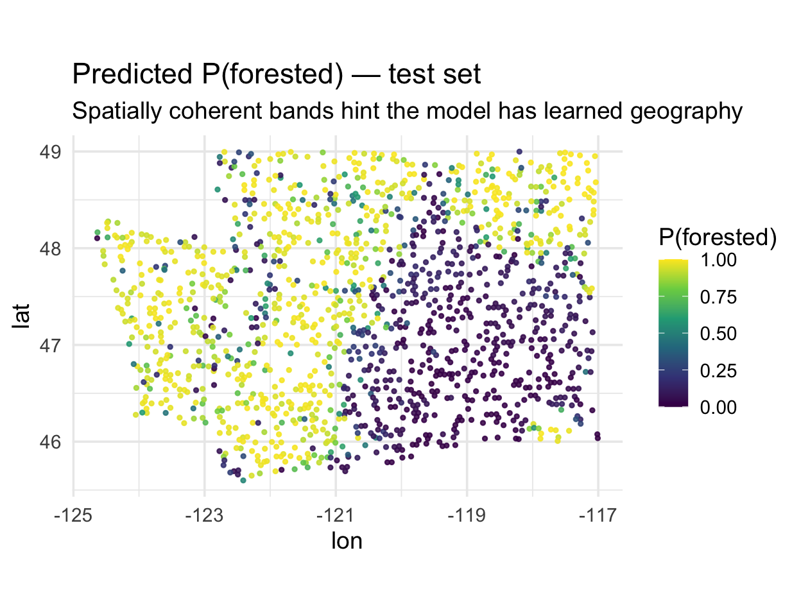
Which predictors carry geography? 

Before looking at residuals, let’s use Moran’s I on the predictors themselves. Features with high spatial autocorrelation are the ones a model could use as a shortcut for location:
library(ape)
set.seed(10)
samp <- slice_sample(forested_train, n = 400)
dmat <- as.matrix(dist(cbind(samp$lon, samp$lat)))
W <- 1 / dmat; diag(W) <- 0
W <- W / rowSums(W)
preds_I <- samp |>
select(where(is.numeric), -forested) |>
map_dfr(
~ tibble(I = Moran.I(.x, W)$observed),
.id = "variable"
) |>
arrange(desc(I))Reading the ranking:
lon/lattop the list — by constructionprecip,vapor_*,temp_*are highly spatial (climate varies smoothly)eastness/northnessnear zero — aspect flips within a hillsideyear≈ 0 — it’s temporal, not spatial
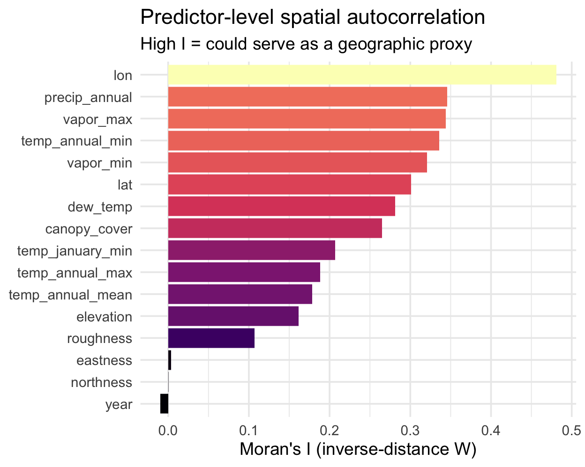
Tip
Cross-reference this with your VIP plot. If your top-ranked features also sit near the top of this chart, they could be doing double duty as location encoders — a candidate for the spatial-CV check next.
The Moran scatterplot 

Moran’s I is the slope of a line through this scatterplot:
- x-axis: residual at a point
- y-axis: mean residual of its neighbors (spatial lag)
- upper-right / lower-left points → clustering
- diffuse cloud around zero → no spatial structure
. . .
The red line’s slope is Moran’s I. Positive slope → the model’s errors are geographically contagious → random CV is overstating performance.
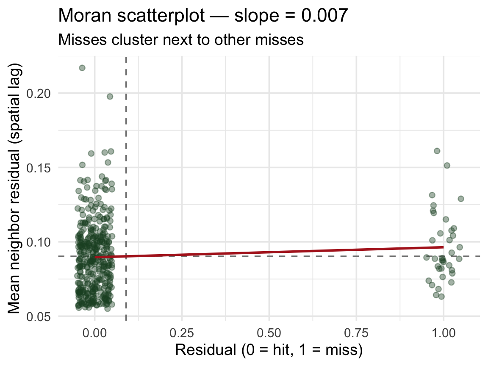
The leakage visualized

Every test point has a training point as a near neighbor. That’s the leakage.
Part 3: Spatial cross-validation 
Enter spatialsample 
The spatialsample package (a tidymodels extension) provides resampling schemes that respect geography.
| Function | How it splits |
|---|---|
spatial_block_cv() |
Tiles the area with a grid; assigns whole blocks to folds |
spatial_clustering_cv() |
k-means on coordinates, uses clusters as folds |
spatial_buffer_vfold_cv() |
Standard v-fold + removes a buffer of points around the held-out fold from training |
spatial_leave_location_out_cv() |
Leave out one named location (watershed, region, …) |
All produce familiar rset objects — they slot into fit_resamples() and workflow_map() unchanged.
📖 Reference: https://spatialsample.tidymodels.org/
Convert to an sf object 

spatialsample needs spatial coordinates — we pass an sf object:
Note
We keep lon/lat as columns (remove = FALSE) so the model can still use them if it wants to — but conceptually that’s a smell, see Part 4.
Applying this to your data 
Most real datasets don’t arrive as sf objects — they’re plain data frames with coordinate columns. Three things to watch for:
1. Column names vary. The forested data uses lon/lat, but your data might use longitude/latitude, gauge_lon/gauge_lat, X/Y, easting/northing. Pass whatever you have to coords = c(x, y):
2. The CRS must match the coordinates. Lon/lat in decimal degrees is EPSG:4326. If your data is projected (UTM, Albers, State Plane), use that EPSG code instead — otherwise your spatial blocks will be nonsense.
3. remove = FALSE is a modeling choice. Keeping the coordinate columns means your model can use them as predictors. Drop them in the recipe (step_rm(lon, lat)) if you want to force the model to rely on environmental features only.
Tip
Rule of thumb: always plot(st_geometry(your_sf)) once after conversion — if the points don’t land where you expect, the column order or CRS is wrong.
Spatial block CV 
library(spatialsample)
set.seed(123)
forested_block <- spatial_block_cv(forested_sf, v = 10)
# Peek at the first few splits
print(forested_block, n = 3)
#> # 10-fold spatial block cross-validation
#> # A tibble: 10 × 2
#> splits id
#> <list> <chr>
#> 1 <split [5125/560]> Fold01
#> 2 <split [5114/571]> Fold02
#> 3 <split [5116/569]> Fold03
#> # ℹ 7 more rows
Zoom in on one fold 
What does one spatial fold actually look like? Pull out fold 1 and plot its training and assessment sets:
. . .
This is the geometry random vfold_cv was quietly destroying: under random CV, those red points would have been surrounded by green ones.
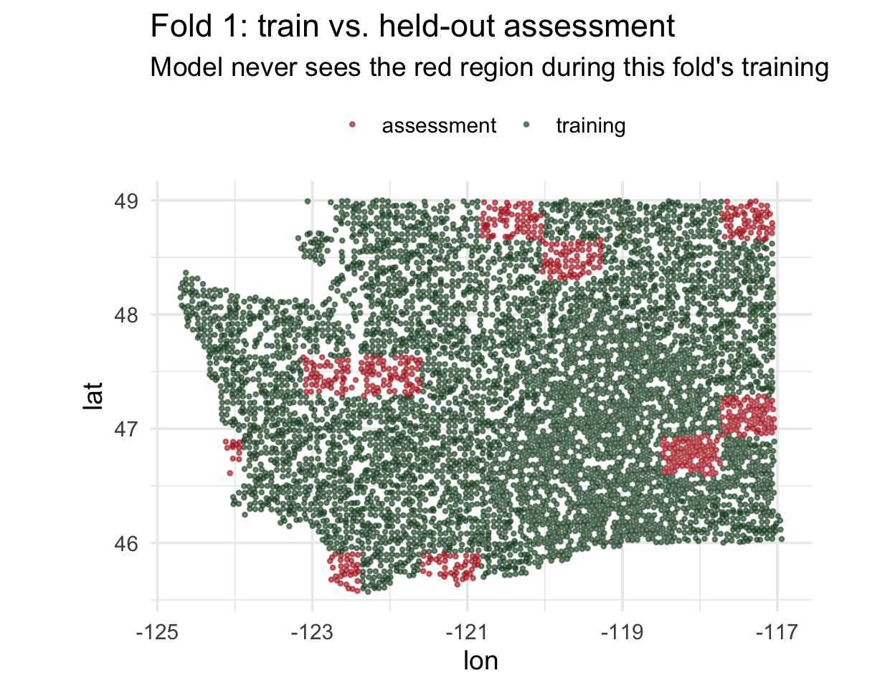
Block size matters 
spatial_block_cv() takes a cellsize argument (in CRS units). It controls the tile side length — and therefore how much spatial separation you actually get.
Small blocks (~0.1°)
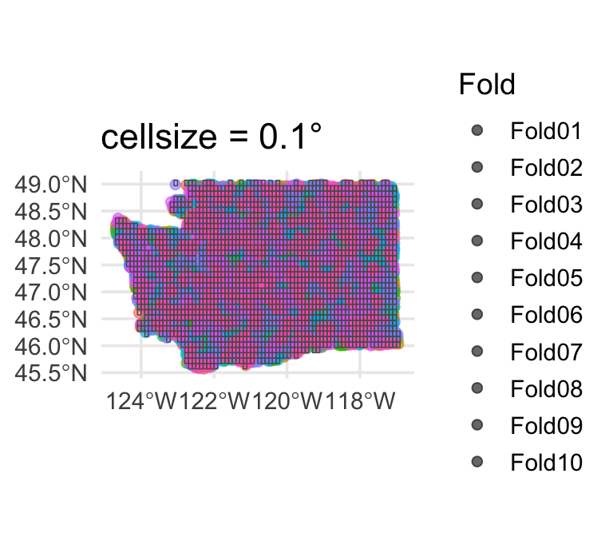
Too small — folds interleave again, essentially random CV.
Default (~0.5°)
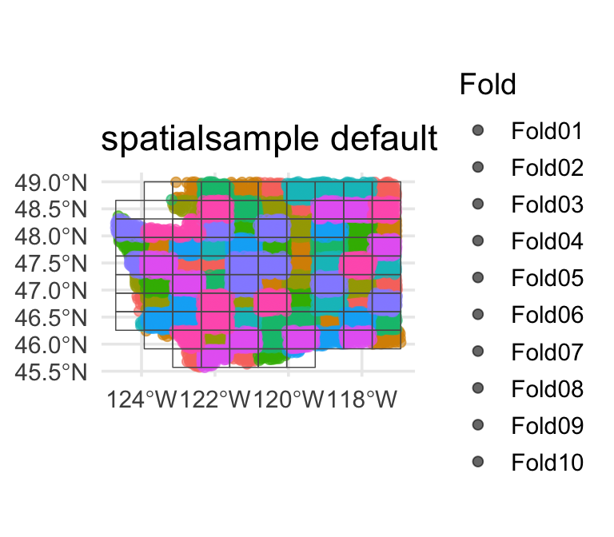
Usually a reasonable starting point.
Large blocks (~1.5°)
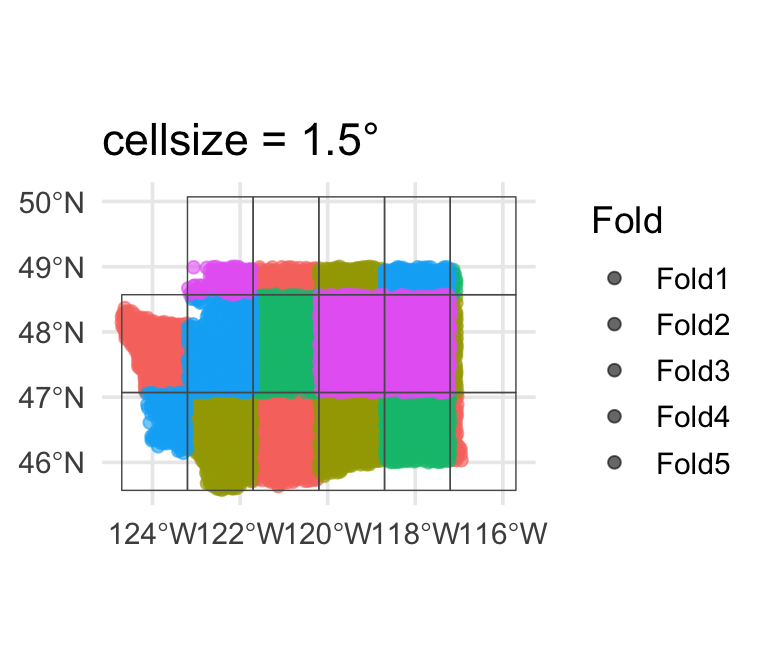
Very conservative — few effective folds, high fold-to-fold variance.
Tip
Rule of thumb: set cellsize to the spatial range of autocorrelation (from the variogram or Moran’s I distance bins). You want neighboring training points far enough from the test block that the model can’t just interpolate.
Re-fit the forested workflow 


Identical to last week — only the resamples argument changes:
set.seed(2024)
cls_metrics <- metric_set(roc_auc, accuracy, brier_class)
ctrl <- control_resamples(save_pred = TRUE)
log_rs_random <- log_wf |>
fit_resamples(resamples = forested_folds, metrics = cls_metrics, control = ctrl)
log_rs_spatial <- log_wf |>
fit_resamples(resamples = forested_block, metrics = cls_metrics, control = ctrl)What a leaky model looks like 
To make spatial leakage actually happen, we’d need a model that can only use geography. Fit a decision tree on lon + lat alone — no environmental predictors:
geo_recipe <- recipe(forested ~ lon + lat, data = forested_train) |>
step_normalize(all_numeric_predictors())
geo_model <- decision_tree(tree_depth = 10, min_n = 3) |>
set_engine("rpart") |> set_mode("classification")
geo_wf <- workflow() |> add_recipe(geo_recipe) |> add_model(geo_model)
set.seed(9)
geo_rs_random <- fit_resamples(geo_wf, forested_folds, metrics = cls_metrics, control = ctrl)
geo_rs_spatial <- fit_resamples(geo_wf, forested_block, metrics = cls_metrics, control = ctrl)#> # A tibble: 4 × 4
#> scheme .metric mean std_err
#> <chr> <chr> <dbl> <dbl>
#> 1 spatial_block_cv accuracy 0.788 0.0163
#> 2 vfold_cv (random) accuracy 0.834 0.00381
#> 3 spatial_block_cv roc_auc 0.796 0.0182
#> 4 vfold_cv (random) roc_auc 0.839 0.00511Warning
Now the gap shows up. Random CV still gives the tree high marks — every held-out hexagon has a neighbor from a different fold to interpolate from. Spatial CV drops ~0.05 AUC because whole regions of Washington are held out and the model has no other signal to fall back on. That gap is spatial leakage — caught red-handed.
ROC curves: all four fits overlaid 

Overlay the out-of-fold predictions from each model × CV scheme:
roc_data <- bind_rows(
collect_predictions(log_rs_random) |>
mutate(model = "all features",
scheme = "random"),
collect_predictions(log_rs_spatial) |>
mutate(model = "all features",
scheme = "spatial"),
collect_predictions(geo_rs_random) |>
mutate(model = "geo-only",
scheme = "random"),
collect_predictions(geo_rs_spatial) |>
mutate(model = "geo-only",
scheme = "spatial")
) |>
group_by(model, scheme) |>
roc_curve(truth = forested, .pred_Yes)
ggplot(roc_data,
aes(1 - specificity, sensitivity,
color = scheme, linetype = model)) +
geom_path(linewidth = 1.1) +
coord_equal()The all-features pair is on top of each other — no leakage to find. The geo-only pair shows visible daylight between random and spatial — the spatial curve sagging is what leakage looks like.

It’s not just lower — it’s more variable 
The mean hides the story. Pull per-fold metrics for both models × both schemes:
per_fold <- bind_rows(
collect_metrics(log_rs_random, summarize = FALSE) |>
mutate(model = "all features", scheme = "random"),
collect_metrics(log_rs_spatial, summarize = FALSE) |>
mutate(model = "all features", scheme = "spatial"),
collect_metrics(geo_rs_random, summarize = FALSE) |>
mutate(model = "geo-only", scheme = "random"),
collect_metrics(geo_rs_spatial, summarize = FALSE) |>
mutate(model = "geo-only", scheme = "spatial")
) |> filter(.metric == "roc_auc")
ggplot(per_fold,
aes(interaction(model, scheme), .estimate,
color = scheme)) +
geom_boxplot() +
geom_jitter(width = 0.08)All-features: both CV schemes give tight, near-identical distributions → no leakage. Geo-only: spatial folds show lower mean AND wider spread — the model’s performance depends heavily on which region you hold out.
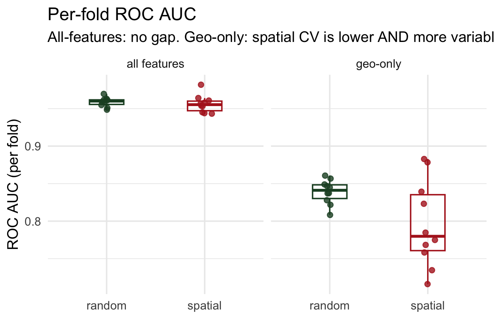
Where does spatial CV struggle? 
Each spatial fold’s held-out region has a location. Map each fold’s AUC to see which regions are hardest to predict:
fold_auc <- collect_metrics(
log_rs_spatial, summarize = FALSE) |>
filter(.metric == "roc_auc") |>
select(id, fold_auc = .estimate)
# join each fold's AUC back to its
# held-out coordinates (see repo)
ggplot(fold_locations,
aes(lon, lat, color = fold_auc)) +
geom_point() +
scale_color_viridis_c(option = "magma")Regions where AUC is lowest are where your model has the least transferable signal — a scientific finding telling you where to invest more training data or features.
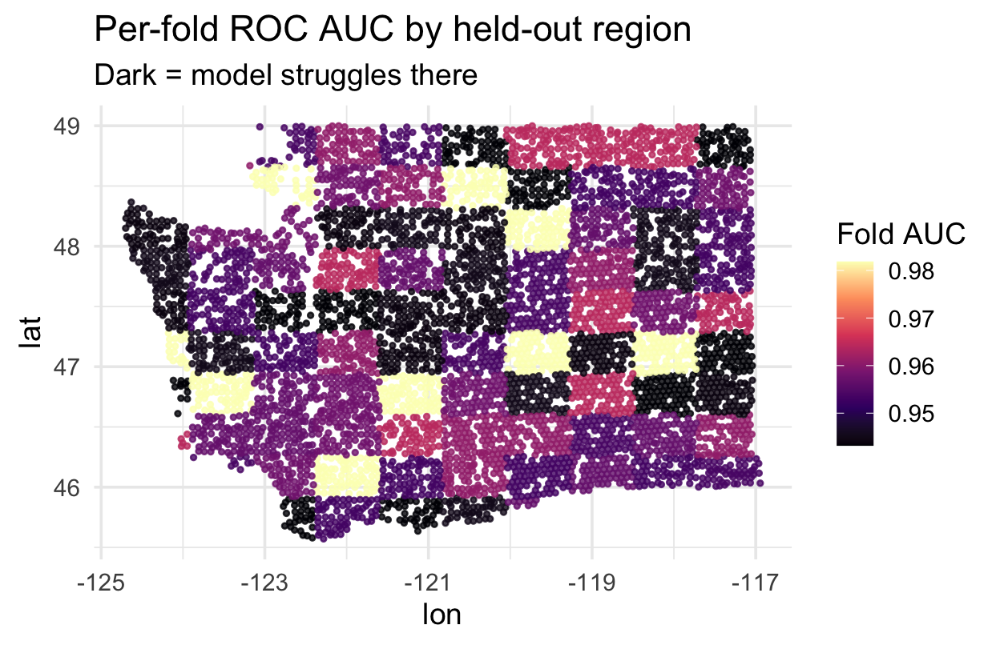
Alternative: spatial_clustering_cv 
When blocks don’t fit your data (e.g., irregularly shaped study regions), cluster-based folds are often better:
Alternative: buffered v-fold 
What if you want random folds but guarantee no training point is within, say, 10 km of a test point?
- Each training set has points within
bufferof held-out points removed - Preserves fold size randomness; enforces a minimum spatial gap
- Good compromise when blocks are too coarse but random CV is too leaky
Warning
buffer is expressed in the units of the CRS. Buffers on geographic (lon/lat) CRSs give meaningless results — always transform to a projected CRS first.
Alternative: leave-location-out CV 
For water resources, the natural unit is usually a watershed, gauge basin, or ecoregion — not a square block. spatial_leave_location_out_cv() holds out one named group at a time:
Each fold trains on 3 regions and predicts the 4th — answers “could I predict eastern WA from coastal WA?”, which vfold_cv can’t. In your project, swap region for HUC8, gauge basin, or climate zone.
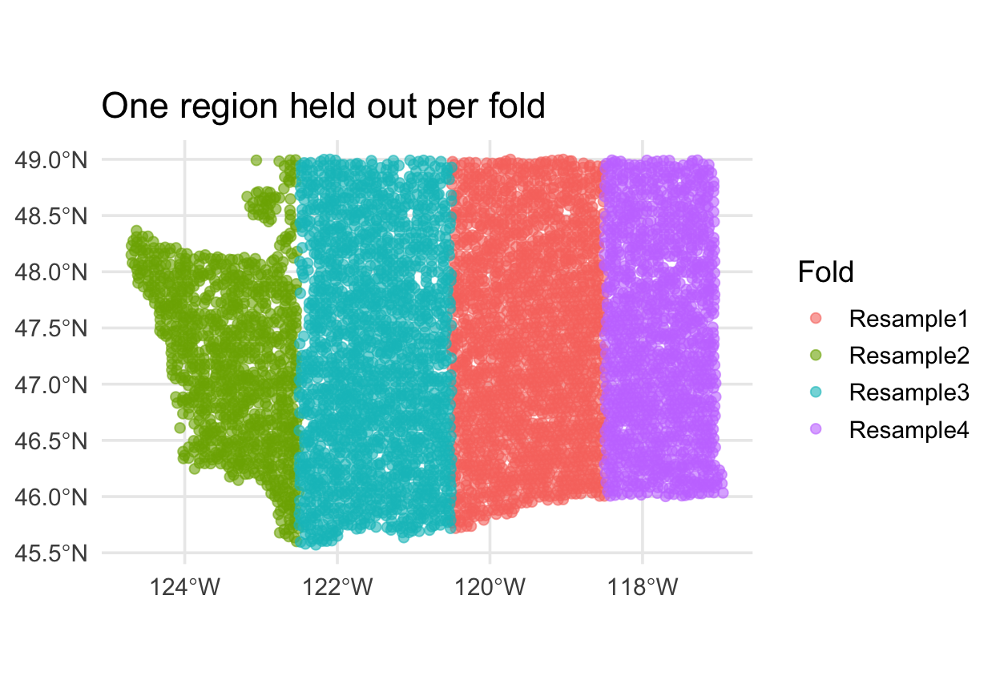
The same idea in regression 
Every example above used classification (forested: Yes/No) — but the same leakage story applies to regression. You just swap the metric.
Pretend we’re predicting log mean streamflow (logQmean) from basin attributes for CAMELS gauges — a spatial regression problem. The 2×2 would be built the same way:
- Classification: higher ROC AUC = better → spatial CV usually lowers AUC
- Regression: higher R² = better → spatial CV usually lowers R²
- Regression: lower RMSE = better → spatial CV usually raises RMSE
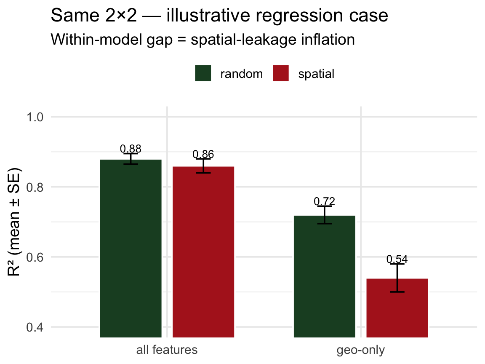
The within-model gap (random vs spatial) is the diagnostic — just on a regression metric instead of AUC.
Important
For your lab: CAMELS basins have gauge_lon/gauge_lat. Random vfold_cv on CAMELS is the regression version of the story above. Build a spatial_block_cv next to it and report both — the delta is the honest cost of generalization.